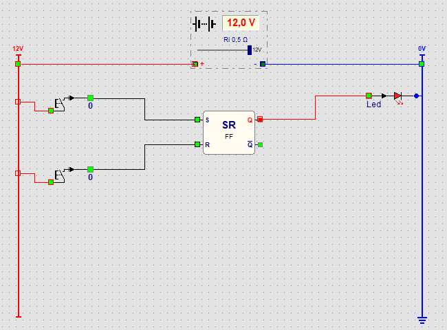

Parcours › Calculer avec des portes › Leçon 27 sur 28

Avec une porte, la sortie dépend seulement des entrées en ce moment. Relâchez le bouton et la lampe s'éteint. Une bascule a une mémoire d'un bit : la sortie Q reste à 1 ou à 0, même quand les entrées s'éteignent.
| S (bouton du haut) | R (bouton du bas) | Q (LED) |
|---|---|---|
| 0 | 0 | reste comme avant |
| 1 | 0 | 1 (set) |
| 0 | 1 | 0 (reset) |
| 1 | 1 | interdit ; dans Logic, R l'emporte : 0 |
C'est ainsi que fonctionne une alarme : un contact de porte ou un détecteur de mouvement ne donne qu'un bref signal sur S, mais la sirène doit continuer à hurler jusqu'à ce que quelqu'un appuie sur reset. Vous pouvez remplacer la LED par un buzzer.
Cliquez avec le bouton droit sur la bascule et choisissez T. Maintenant Q change à chaque appui sur le bouton : la bascule divise le nombre d'appuis par deux. Ajoutez une deuxième bascule, elle aussi de type T. Comment les relier pour que deux lampes comptent en binaire : 0, 1, 2, 3 et de nouveau 0 ?
Le bouton-poussoir va vers T de la première bascule. Sa sortie Q va vers une lampe de valeur 1. Sa sortie Q̅ (non-Q) va vers T de la deuxième bascule, et Q de cette deuxième bascule vers une lampe de valeur 2. Chaque fois que la première lampe passe de 1 à 0, Q̅ s'allume et la deuxième bascule change : c'est la retenue, comme dans le demi-additionneur.